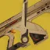
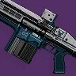
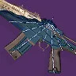
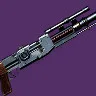
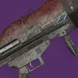
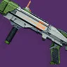
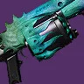
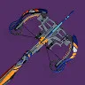

小棒猪-LGpig · 刷取清单
按高难、清怪与输出场景给出实战评级（T0–T4）、推荐词条与刷取优先级。
-
异域武器
139 把139 把异域武器的输出、清怪与高难评级，含实测总伤与 DPS，以及每一档评级的理由。



 更新 2026.9.10
更新 2026.9.10 -
异域护甲
144 件144 件异域护甲按猎人、术士、泰坦分三节，含每一件的定位与评语。


 更新 2026.9.10
更新 2026.9.10 -
白弹紫枪
56 把56 把白弹位传说武器按枪械类型分档，含框架、属性、勇士克制、推荐 Perk、获取地点与每一把的评级理由。




更新 2026.9.6 -
绿弹紫枪
89 把89 把绿弹位传说武器按枪械类型分档，含框架、属性、勇士克制、推荐 Perk、获取地点与每一把的评级理由。


 更新 2026.9.6
更新 2026.9.6 -
威能紫枪
61 把61 把威能位传说武器按枪械类型分档，含框架、属性、勇士克制、推荐 Perk、获取地点与每一把的评级理由。



 更新 2026.9.6
更新 2026.9.6 -
护甲套装
29 套29 套护甲套装按泛用性、强度与使用频率排序，含件数、获取地点、应用场景与每一套的说明。
更新 2026.9.6
Aegis · 购物清单
按武器类型横向对比，给出同枪型内的梯队分级（S–F）与五栏推荐词条。
-
白弹
356 把356 把白弹位传说武器按枪械类型分档评级，含框架、属性、勇士克制、Perk 推荐、来源与逐条注解。
 更新 2026.8.30
更新 2026.8.30 -
绿弹
228 把228 把绿弹位传说武器按枪械类型分档评级，含框架、属性、勇士克制、Perk 推荐、来源与逐条注解。


 更新 2026.8.30
更新 2026.8.30 -
威能
156 把156 把威能位传说武器按枪械类型分档评级，含框架、属性、勇士克制、Perk 推荐、来源与逐条注解。



更新 2026.8.30 -
其他
8 把源表「其他」分页的 8 把武器，含框架、属性、勇士克制、Perk 推荐、来源与逐条注解。

更新 2026.8.30